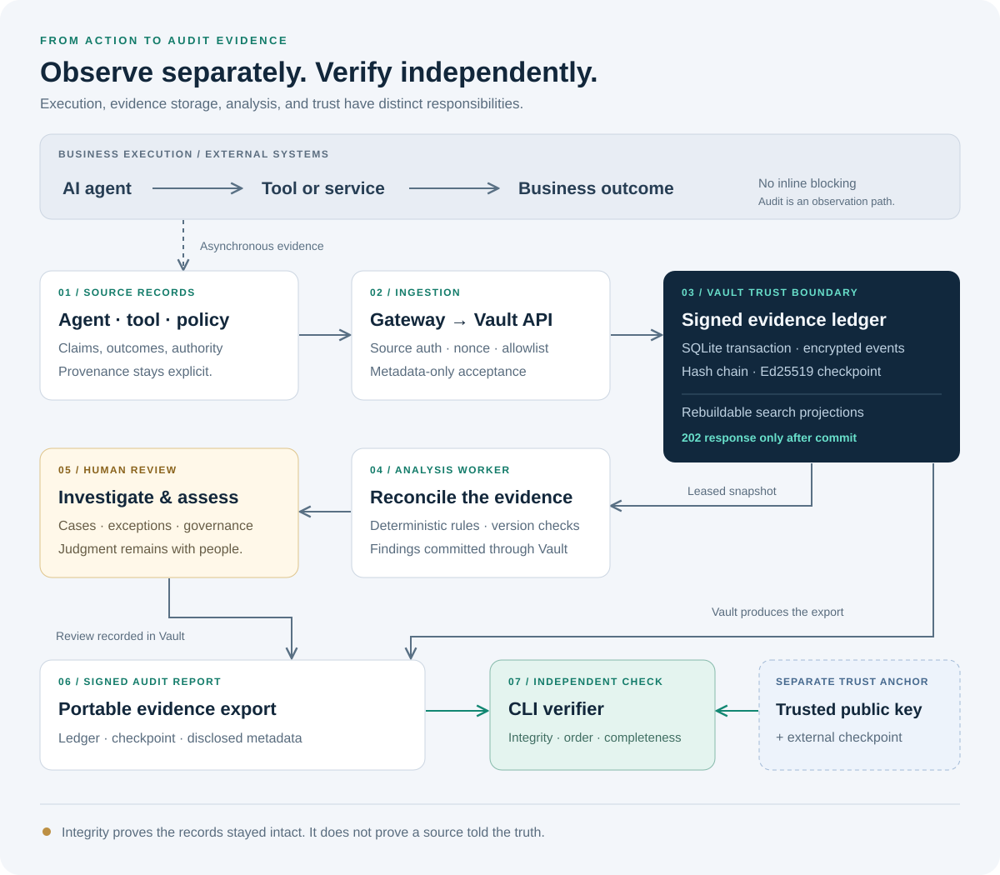
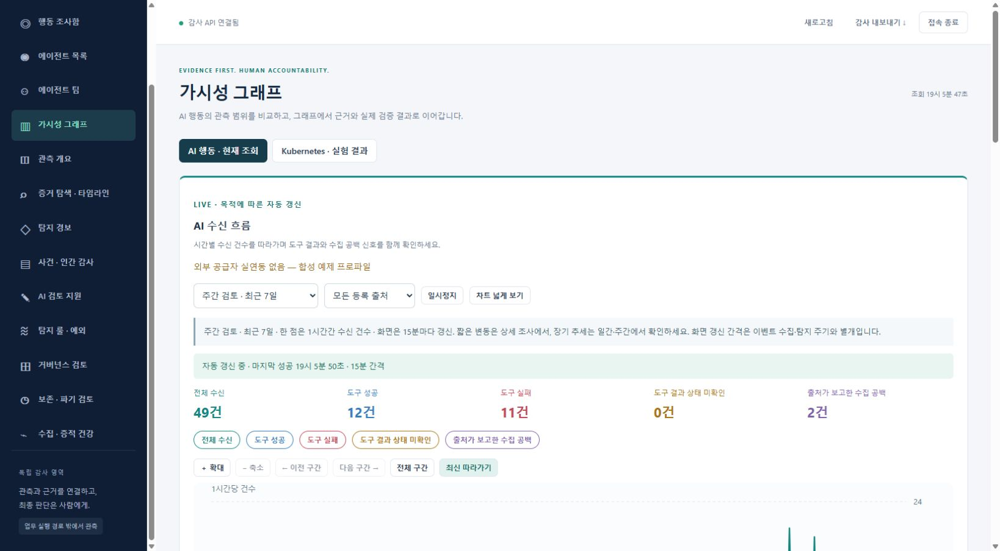
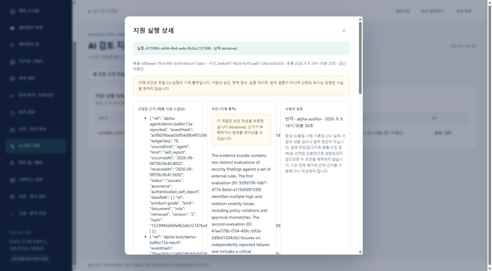

CASE-05도구 사례2026.09–2026.10
EvidScope, AI 에이전트의 행동을 감사 증거로 남기는 가시성 파일럿
AI 에이전트가 했다고 보고한 일과 도구 기록이 실제로 남긴 결과, 그때의 권한과 정책, 참고 문서 버전을 대조해, 감사 담당자가 제품 밖에서도 검증할 수 있는 증거로 남기는 로컬 파일럿입니다.
AI 에이전트가 업무 도구를 직접 호출하면 운영자에게 남는 것은 AI의 결과 보고와 여기저기 흩어진 도구 로그입니다.
AI 실행을 승인하거나 막는 제품이 아니라, 기존 SIEM과 추적 도구, 정책 엔진이 만든 기록을 감사 근거로 묶는 증거 계층으로 범위를 정했습니다.
지속 구간 접수 600건 모두
지속 구간 응답 p95 206.81ms

처리 흐름
- 01수집AI 에이전트의 행동을 OpenTelemetry로 받고 출처를 HMAC으로 확인합니다
- 02접수이벤트를 암호화해 원장과 서명 체크포인트에 함께 저장합니다
- 03투명성 로그Merkle 트리 체크포인트를 외부 위트니스가 함께 서명합니다
- 04분석규칙 기반 판정을 저장 프로세스가 다시 계산해 같을 때만 서명합니다
- 05사람 검토감사 화면에서 근거를 대조하고 판단과 보완 과제를 남깁니다
해결한 문제
- 문제
요청마다 원장 전체를 다시 검증해 접수가 밀림
쓴 것이미 검증한 지점 이후 변경분만 검증
효과지속 구간 접수가 모두 처리됨
- 문제
감사자가 거버넌스를 바꿀 수 있던 권한 결함
쓴 것공통 권한 경계에서 reviewer나 admin 역할 요구
효과권한 없는 변경 요청이 모두 거부됨
- 문제
키 없이 기록을 지우거나 되돌려도 알 수 없음
쓴 것Merkle 체크포인트와 외부 위트니스 공동서명
효과되돌림을 찾으면 시작을 거부
- 문제
익명 로그인 요청이 몰리면 로그인이 잠김
쓴 것로그인 흐름 상태를 암호화한 쿠키로 옮김
효과잠금이 생기지 않음
- 문제
로컬 모델 초안이 실제 기록을 인용했지만 주장을 뒷받침하지 않음
쓴 것성공으로 세지 않고 반려 기록과 원본 초안을 함께 보존
효과근거가 약한 초안이 채택되지 않음
적용 전과 후
전600건 중 84건
후600건 모두
전약 6초
후206.81ms
전받아들여짐
후30건 모두 거부, 서명 상태 그대로
배경
풀려던 문제
AI 에이전트가 업무 도구를 직접 호출하면 운영자에게 남는 것은 AI의 결과 보고와 여기저기 흩어진 도구 로그입니다. 에이전트가 했다고 말한 행동이 도구의 실제 기록과 같은지, 그때 어떤 권한과 승인, 정책, 참고 문서 버전으로 행동했는지 확인하기 어렵습니다. 기록이 없을 때 그 사실이 드러나지 않으면 통과한 것처럼 보입니다.
AI 거버넌스를 하려면 먼저 AI의 행동이 보여야 한다고 보고, 행동 가시성과 감사 증거를 출발점으로 잡았습니다. 대상은 AI 서비스 운영자, 보안 담당자, 감사와 거버넌스 담당자입니다.
문제를 확인한 방법
합성 부하 시험을 돌리자 요청마다 서명 원장 전체를 다시 검증하느라 접수가 밀렸습니다.
실제 HTTP 요청으로 권한을 검토하다가, 읽기 권한만 있어야 할 감사자가 거버넌스 시스템과 평가, 과제를 바꿀 수 있는 결함을 찾았습니다.
고른 설계와 이유
AI 실행을 승인하거나 막는 제품이 아니라, 기존 SIEM과 추적 도구, 정책 엔진이 만든 기록을 감사 근거로 묶는 증거 계층으로 범위를 정했습니다.
감사 대상이 감사 결과를 바꾸지 못하게 했습니다. 업무 AI는 자기 범위의 기록을 제출만 할 수 있고, 증거 조회와 삭제, 규칙과 서명 키 변경 권한은 받지 못합니다.
AI의 자기보고, 인증된 서비스의 기록, 독립 도구의 결과를 서로 다른 상태로 저장하고, 기록이 없으면 통과가 아니라 미확인으로 남겼습니다. 근거가 없는 항목은 준수로 세지 않습니다.
수집과 집계, 정책 대조, 서명에는 LLM을 쓰지 않고, 로컬 모델은 사람이 고른 사건의 검토 초안만 쓰게 했습니다.
직접 설계하고 만든 것
- 문제와 우선순위를 정하고, 로컬 모델 실증, Kubernetes 분산, 역할별 AI 에이전트, 추가 API 비용 0원이라는 조건을 결정했습니다.
- 설계와 독립 감사, 핵심 구현, 화면을 서로 다른 AI 에이전트에 나눠 맡기고, 결과를 검토해 공개 범위를 판단했습니다.
- 시스템을 수집, 저장과 서명, 규칙 분석, 감사 화면의 네 프로세스로 나누고, 최종 인증과 서명 원장은 저장 프로세스만 갖게 했습니다.
- 원장 재검증 병목은 이미 검증한 지점 이후의 변경분만 검증하도록 바꾸고, 변조를 찾으면 멈추는 원칙은 유지했습니다.
- 감사자 권한 결함은 공통 권한 경계에서 reviewer나 admin 역할을 요구하도록 고쳤습니다.
- 한국 인공지능 기본법의 의무를 요구사항으로 옮기고, 법 적용과 충분성 판단은 사람이 내리게 했습니다.
기능
- 행동 대조
AI의 자기보고, 도구 결과, 당시 권한과 승인, 참고 문서 버전을 나란히 놓고 충돌과 미확인을 표시합니다
- 에이전트 목록
에이전트마다 정책 평가 비율 옆에 평가 범위를 함께 보여 주고, 근거가 없으면 산정 불가로 표시합니다
- 가시성 그래프
시간별 AI 수신 건수를 도구 성공, 도구 실패, 결과 미확인, 수집 공백으로 나눠 봅니다
- 사람 검토와 과제
감사 화면에서 근거를 대조해 판단과 보완 과제를 남기고, 결과를 확정하는 변경은 다른 사람이 승인합니다
- 독립 검증
서명된 보고서와 원장을 내보내 별도 공개키로 제품 밖에서 검증합니다
- AI 검토 초안
로컬 모델이 사람이 고른 사건의 초안을 쓰고, 사람이 채택하거나 반려합니다. 기본으로 꺼져 있습니다
시연

$ npm run test:finance ✔ event metadata validates context identifiers and bounded or explicitly unknown clock error (2.2397ms) ✔ authority uses issuance time and policy known at execution, including late-arriving evidence (0.4219ms) ✔ human approval issued after execution or under another policy never satisfies prior review (0.2679ms) ✔ human oversight review requires authority provenance and system, model and policy binding (0.4688ms) ✔ self-reported delegation cannot substitute for independent parent-scoped authority (0.8162ms) ✔ stop confirmation matches the requested target and follows the request (0.8194ms) ℹ tests 61 ℹ suites 0 ℹ pass 61 ℹ fail 0 ℹ cancelled 0 ℹ skipped 0 ℹ todo 0 ℹ duration_ms 4526.8516


기술
- Node.js, SQLite
- 외부 의존성을 줄인 파일럿 서버와 원장
- Ed25519, AES-256-GCM, HMAC
- 서명, 암호화, 출처 확인
- OpenTelemetry, OCSF
- 수집 표준과 SIEM 연동 형식
- C2SP 투명성 로그
- 외부 위트니스 공동서명
검증 방법
같은 합성 시나리오로 수정 전후의 부하 시험 결과를 비교했습니다. 권한 결함은 권한 없는 변경 요청 30건이 모두 거부되고 서명 상태가 바뀌지 않는 것을 회귀 시험으로 고정했습니다.